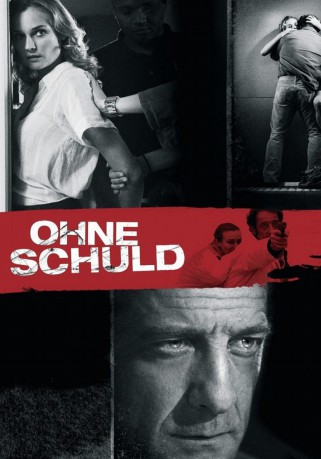

#3702 Ohne Schuld
 gesehen am 24.05.2016
gesehen am 24.05.2016
 
 IMDB-Wertung: 7.2 / 10
IMDB-Wertung: 7.2 / 10  Metascore: 0
Metascore: 0 
Lisa und Julien führen mit ihrem Sohn Oscar ein glückliches Familienleben. Die heimische Idylle wird jedoch schlagartig zerstört, als eines Morgens die Polizei vor der Tür steht und die junge Mutter verhaftet. Des Mordes beschuldigt, wird sie für eine Tat, mit der sie scheinbar nichts zu tun hat, zu 20 Jahren Haft verurteilt. Einzig Julien glaubt an Lisas Unschuld und kämpft erbittert für ihre Freilassung. Doch die Zeit bis zur Berufungsverhandlung ist lang, die Erfolgsaussichten schlecht. Und so fasst er einen verzweifelten Plan, um seine große Liebe aus dem Gefängnis zu befreien...
Jahr: 2008
Dauer: 96 Minuten
FSK: 16
Land: Frankreich Studio: Koch MediaTonspuren:
Untertitel: Deutsch,
Auflösung: 1080p (1920x816) Größe: 5611 MB
Genre: Thriller, Drama, Krimi
Regisseur: Fred Cavayé
Drehbuch: Anne Fine
Soundtrack:
Darsteller:
 Vincent Lindon als Julien Auclert
Vincent Lindon als Julien Auclert Diane Kruger als Lisa Auclert
Diane Kruger als Lisa Auclert Moussa Maaskri als Martial
Moussa Maaskri als Martial Alaa Safi als Moussa
Alaa Safi als Moussa- Mika Ela Fisher als Femme tatouage
- Corentin Daumas als L'élève Corentin
- Lancelot Roch als Oscar
- Olivier Marchal als Henri Pasquet
- Hammou Graïa als Commandant Susini
 Liliane Rovère als Mère Julien
Liliane Rovère als Mère Julien- Olivier Perrier als Père Julien
- Rémi Martin als Capitaine Jousseaume
- Thierry Godard als Pascal
- Slimane Hadjar als David
- Dorothée Tavernier als Nathalie
- Joseph Beddelem als Hassan
 Ivan Franek als Dragan
Ivan Franek als Dragan- Pascal Parmentier als Policier arrestation
- Kader Boukhanef als Capitaine arrestation
- Odile Roire als Maitre Thomassin
- Martine Vandeville als Infirmière hôpital
- Gilles Kneuse als Médecin hôpital
- Nathalie Bécue als Gardienne pariair
- Frédéric Maranber als Docteur gardes
- Marie-France Santon als Infirmière prison
- Pierre Benoist als Policier voiture Lisa
- Patrick Doud als Monsieur Bathany
- Diane Stolojan als Madame Meyral
- Flore Vannier-Moreau als Baby-sitter
- Smadi Wolfman als Femme parc
- Olivier Francart als Auto-stoppeur #1
- Marie Lombard als Auto-stoppeur #2
- Nasser Elabouti als Policier heige
- Albert Jeunehomme als Douaier aéroport #1
- Andreas Christou als Douaier aéroport #2
- Marc Robert als Capitaine Rouxel
- Vincent Dubois als Capitaine Caillart
Datei: X:\2008(N-Z)\Ohne Schuld (2008, FSK16, 1920x816).mkv seit 23.05.2016
Festplatte: HD 2008(G-Z)-2009(A-F)
 Es gibt insgesamt 91 Filme in der Gruppe '2008(N-Z)'
Es gibt insgesamt 91 Filme in der Gruppe '2008(N-Z)'